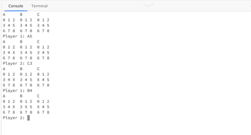

Notakto
This was a project I started back in December 2020 when I first learned python. I was the sole creator/developer for this project.
Notakto is another variant of a famous game TIC-TAC-TOE. The main difference in Notakto is that it is an impartial game which always results in a winner.
There are two versions of this game availble in the respective GitHub repository. One version is an AI version which is almost difficult to defeat.
While the other one is a simple two player version which you cna enjoy with your friends.
Simple Notakto
Notakto AI

LINK:
Game Rules:
The game ends when all the boards contain a three-in-a-row of X's. The player that plays the last move loses the game.
Read More About the Game